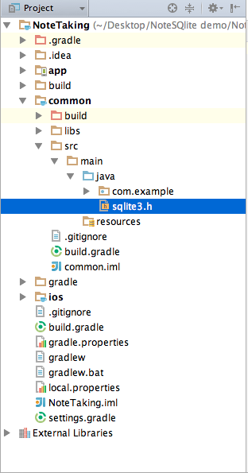
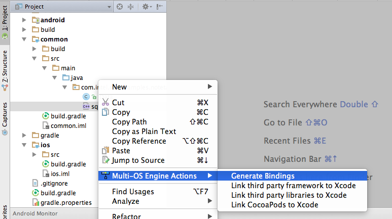
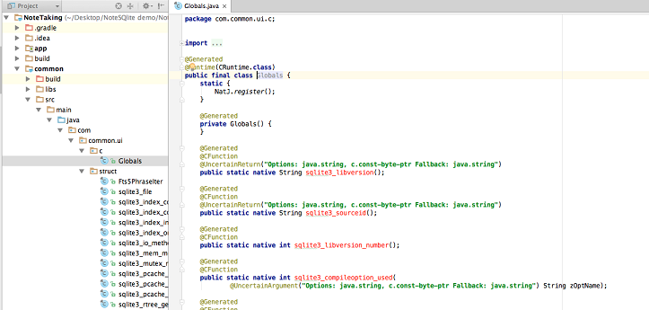
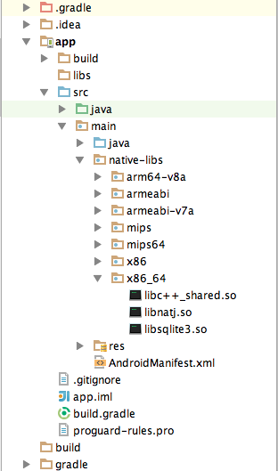

Working with Persistent Storage Using the Multi-OS Engine Technology Preview - Part 2¶
This is the second part of a two-part tutorial that shows how to do persistent storage in Apple iOS* with Java* using Intel’s Multi-OS Engine Technology Preview. This part adds SQLite* functionality to our app created using the first tutorial part.
We will show how to use SQLite library using the Multi-OS Engine for both Android* and iOS by generating bindings for the sqlite.h file and how to access them. The first part of this tutorial can be found here. Building on the app from part 1, download sqlite3.h from the SQLite website and copy it to our common library directory.
To generate Java bindings from C header files, click the Generate Bindings button as shown.
The Multi-OS Engine creates a new directory to contain all the NatJ bindings related to the SQLite. We will use these bindings to create database instance and run our database CRUD operations common to both platforms.
Here we will add an annotation @Library(“sqlite3”) to our generated class file. The @Library annotation specifies the name of the native library that needs to be loaded for the marked class to work. More specifically, when NatJ.register() is invoked, NatJ will search for this annotation in the invoker class, and try to load the specified library with NatJ.lookUpLibrary(…).
@Library("sqlite3")
@Runtime(CRuntime.class)
public final class Globals {
static {
NatJ.register();
}
Also, we need the Multi-OS Engine’s NatJ bindings to access native C pointers. To do this, add natj-api.jar library as dependency to the common library folder. This jar can be found in the GitHub* project and you can directly import it into your project.
Next, we create a Note class that will be our data model for the database.
public class Note implements Comparable<Note>{
private Integer id;
private String note;
public void setId(int i){
id =i;
}
public Integer getId(){
return id;
}
public void setNote(String s){
note = s;
}
public String getNote(){
return note;
}
@Override
public int compareTo(Note o) {
return this.id.compareTo(o.id);
}
}
Now let’s create common code to create and manage the database and to store the note contents.
SQLiteDatabaseHelper.java is used to open and close database instance. In its constructor directory path of the database file is passed which will be platform specific. Its onCreate method creates a new notes table if it already doesn’t exists.
The Database.java class handles the insertion, deletion, update and selection queries. The methods of this class abstracts the native SQLite operations. For example, here is the insertion query.
@Override
public void insert(String note) {
StringBuilder sql = new StringBuilder();
sql.append("INSERT");
sql.append(" INTO ");
sql.append(TABLE);
sql.append(" (note) values (");
sql.append("\"");
sql.append(note);
sql.append("\")");
execSQL(sql.toString());
}
The execSQL method prepares SQL statement to execute SQL queries.
@Override
public void execSQL(String statement) {
SQLiteStatement stmt = new SQLiteStatement(statement, null);
if (stmt.prepare(dbHandle)) {
if (!stmt.exec()) {
System.err.println("Error executing - " + stmt.getLastError());
}
} else {
System.err.println("Error executing - " + stmt.getLastError());
System.err.println("\tin: " + stmt.getStatement());
}
}
The SQLiteStatement.java handles the native routines of the SQLite libraries like prepare(), exec(), query(), strep(), close(). This class uses the native C API calls that were generated using the binding generator. The following snippets show how prepare() and exec() methods are implemented.
public boolean prepare(VoidPtr dbHandle) {
if (dbHandle == null) {
throw new NullPointerException();
}
this.dbHandle = dbHandle;
@SuppressWarnings("unchecked")
Ptr<VoidPtr> stmtRef = (Ptr<VoidPtr>) PtrFactory.newPointerPtr(
Void.class, 2, 1, true, false);
int err = Globals.sqlite3_prepare_v2(dbHandle, statement, -1, stmtRef,
null);
if (err != 0) {
lastError = Globals.sqlite3_errmsg(dbHandle);
return false;
}
stmtHandle = stmtRef.get();
int idx = 0;
for (Object bind : bindArgs) {
idx++;
if (bind instanceof String) {
err = Globals.sqlite3_bind_text(stmtHandle, idx, (String)bind, -1, new Globals.Function_sqlite3_bind_text(){
@Override
public void call_sqlite3_bind_text(VoidPtr arg0){}
});
} else if (bind instanceof Integer) {
err = Globals.sqlite3_bind_int(stmtHandle, idx, (Integer) bind);
} else if (bind instanceof Long) {
err = Globals.sqlite3_bind_int64(stmtHandle, idx, (Long) bind);
} else if (bind instanceof Double) {
err = Globals.sqlite3_bind_double(stmtHandle, idx, (Double) bind);
} else if (bind == null) {
err = Globals.sqlite3_bind_null(stmtHandle, idx);
} else {
lastError = "No implemented SQLite3 bind function found for " + bind.getClass().getName();
return false;
}
if (err != 0) {
lastError = Globals.sqlite3_errmsg(dbHandle);
return false;
}
}
return true;
}
public boolean exec() {
if (stmtHandle == null) {
throw new RuntimeException("statement handle is closed");
}
//LOG.debug("Execing " + statement);
int err = Globals.sqlite3_step(stmtHandle);
if (err == 101 /* SQLITE_DONE */) {
affectedCount = Globals.sqlite3_changes(dbHandle);
lastInsertedID = Globals.sqlite3_last_insert_rowid(dbHandle);
}
close();
if (err != 101 /* SQLITE_DONE */) {
lastError = Globals.sqlite3_errmsg(dbHandle);
return false;
}
return true;
}
Based on this, we can implement different methods of the sqlite statement class.
The SQLiteCursor.java class handles the data extraction APIs from the statement class. Following are methods to get integer and string values from the query executed.
@Override
public String getString(int i) {
if (stmt == null) {
throw new RuntimeException("statement is closed");
}
return Globals.sqlite3_column_text(stmt.getStmtHandle(), i);
}
@Override
public int getInt(int i) {
if (stmt == null) {
throw new RuntimeException("statement is closed");
}
return Globals.sqlite3_column_int(stmt.getStmtHandle(), i);
}
Android has its own version of SQLite that has a slightly different implementation than the native one. This limits our ability to reuse the code between the platforms. For this reason, we will build our own custom version of SQLite for Android using NatJ bindings. A dynamic shared object library of the native SQLite is created which is linked at runtime so Android could handle the native C calls of SQLite. Along with the sqlite.so library, two more libraries are linked with the project. They are libnatj.so and libc++_shared.so. The libnatj.so is a NatJ bridge to work with the NatJ calls of Multi-OS Engine. The libc++_shared.so is shipped to support Android 4.x. It is not needed for Android 5.x.
In the build.gradle file, we have to make changes so that we can use of the .so native libs.
First we have to specify the src directory for jnilibs in the sourceSets
sourceSets {
main {
manifest.srcFile 'src/main/AndroidManifest.xml'
java.srcDir 'src'
res.srcDir 'res'
assets.srcDir 'assets'
jniLibs.srcDir 'src/main/native-libs'
jni.srcDirs = [] //disable automatic ndk-build call
}
}
Next we create jar file of the native libs.
task nativeLibsToJar(type: Zip, description: 'create a jar archive of the native libs') {
destinationDir file("$buildDir/native-libs")
baseName 'native-libs'
extension 'jar'
from fileTree(dir: 'src/main/native-libs', include: '**/*.so')
into 'lib/'
}
We compile and build that jar:
tasks.withType(org.gradle.api.tasks.compile.JavaCompile) {
compileTask -> compileTask.dependsOn nativeLibsToJar
}
clean.dependsOn 'cleanCopyNativeLibs'
tasks.withType(com.android.build.gradle.tasks.PackageApplication) {
pkgTask ->
pkgTask.jniFolders = new HashSet()
pkgTask.jniFolders.add(new File(buildDir, 'native-libs'))
}
iOS has a built-in SQLite native version which can be directly used without any linking of libraries.
Next we create platform specific code for iOS and Android to make the database calls.
iOS Specific Code¶
A SQLiteDatabaseHelper class is created which extends the SQLiteDatabaseHelper common class. Only the getDocumentsPath() method of this class is overridden to get the iOS specific documents directory path.
@Override
protected String getDocumentsPath() {
NSArray paths = Foundation.NSSearchPathForDirectoriesInDomains(
NSSearchPathDirectory.DocumentDirectory,
NSSearchPathDomainMask.UserDomainMask, true);
return (String) paths.firstObject();
}
In the viewDidLoad() method of MasterViewController, an instance of databasehelper is created in whose constructor filepath of the database is passed. An instance of Database is created and its reference is retrieved by getWritableDatabase() method.
@Override
@Selector("viewDidLoad")
public void viewDidLoad() {
// Do any additional setup after loading the view, typically from a nib.
navigationItem().setLeftBarButtonItem(editButtonItem());
ISQLiteDatabaseHelper helper = new SQLiteDatabaseHelper(dbFileName);
db = helper.getWritableDatabase();
}
A listener method is added to the add button in which we execute database insertion query.
@Selector("insertNewObject:")
public void insertNewObject(Object sender){
db.insert(defaultText);
makeObjects();
NSIndexPath indexPath = NSIndexPath.indexPathForRowInSection(0,0);
tableView().insertRowsAtIndexPathsWithRowAnimation((NSArray) NSArray.arrayWithObject(indexPath), UITableViewRowAnimation.Automatic);
performSegueWithIdentifierSender("showDetail", this);
}
In DetailViewController, changes to the default text are updated with the update API call and note is deleted if the text is left blank.
@Selector("doSaveNote:")
public void doSaveNote( Object sender){
if (detailNote == null || db == null) {
return;
}
if(!dataText.text().equals("")){
detailNote.setNote(dataText.text());
db.update(detailNote);
}else{
db.delete(detailNote.getId());
}
}
Android Specific Code¶
Like iOS, an AndroidDatabaseHelper class is created which overrides the getDocumentsPath() to pass the directory path of the Android SQLite file.
@Override
protected String getDocumentsPath() {
return Environment.getExternalStorageDirectory().getPath();
}
Also similar to iOS, the databasehelper and database instances are created in the iOS counterpart of viewDidLoad() method (in onCreate() method of MainActivity.java).
@Override
protected void onCreate(Bundle savedInstanceState) {
super.onCreate(savedInstanceState);
setContentView(R.layout.activity_main);
SQLiteDatabaseHelper dbHelper = new AndroidSQLiteDatabaseHelper(AndroidSQLiteDatabaseHelper.DB_NAME);
db = dbHelper.getWritableDatabase();
}
The listener method is added to the add button method to insert in the database.
public void insertNewObject() {
db.insert(DEFAULT_TEXT);
makeObjects();
}
EditorActivity.java calls the update and delete queries according to the user input.
private void finishEditing() {
String newText = editor.getText().toString().trim();
if(newText.equals("")){
newText = DEFAULT_TEXT;
db.delete(noteId);
}
else if(!newText.equals(note)){
noteDetail.setNote(newText);
db.update(noteDetail);
}
finish();
}
Run the app so you can see the database files created in your respective platforms.
This method allows the business logic of the code can be reused on both the platforms using the same implementation of SQLite. This definitely saves a lot of coding effort and helps minimize code maintenance.